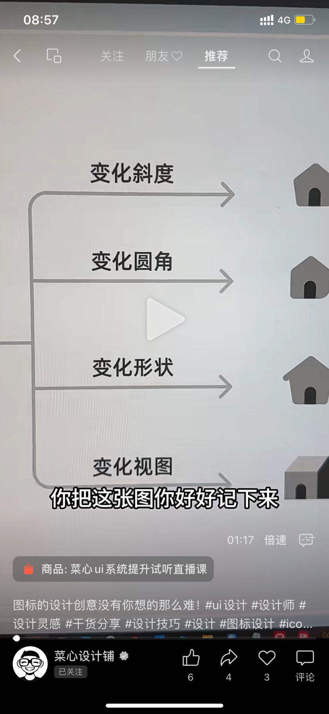

图标设计
图标的创意没有想象中那么难。从「变化」的四种手法，到融入品牌属性，再到三种常见风格，整理一套可复用的图标设计思路。
本文整理自菜心设计铺的图标设计分享，版权归原作者所有。以下为原文要点整理与配图转录。
01 / 变化：同一形状的四种手法
图标的创意没有你想的那么难。以一个简单的「小房子」形状为基础，通过四种变化手法就能衍生出一组风格统一又各有区别的图标：
- 变化斜度——改变图形的倾斜角度，让造型更灵动。
- 变化圆角——调整边角的圆润程度，改变视觉软硬。
- 变化形状——在保持识别度的前提下重构外形比例。
- 变化视图——切换观察视角（如从平面到立体透视）。
原文用一张图演示了这四种手法：同一个房子图标，依次做斜度、圆角、形状、视图的变化，形成一组成套的图标。作者特别提醒：「你把这张图你好好记下来」。

02 / 融入品牌属性
在掌握变化手法之后，下一步是把品牌属性融入图标设计——让图标不只是通用符号，而能体现产品自身的品牌气质，形成独属于自己的视觉语言。
03 / 风格：三种常见表现
图标常见的风格表现可分为三类，可根据产品调性选择或组合：
- 面性渐变——以块面为基础叠加渐变，层次丰富、现代感强。
- 扁平面性——纯色块面、无多余装饰，简洁直观。
- 线面结合——线条与块面搭配，兼顾轻量与重点突出。
「 图标设计 = 一套变化手法（斜度 / 圆角 / 形状 / 视图）+ 品牌属性 + 合适的风格表现。 」
— 原文要点整理